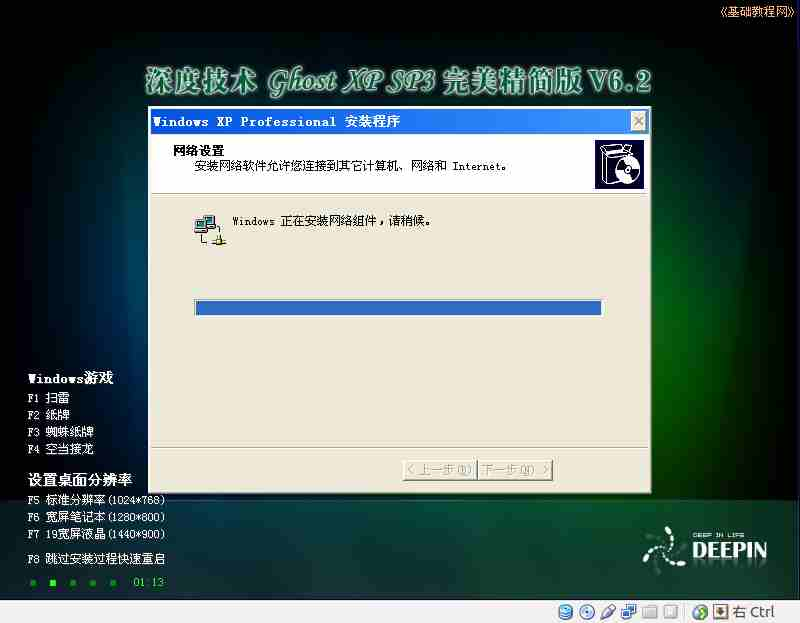

2011-2012 第二学期九年级系统安装教学设计
作者：TeliuTe 来源：基础教程网
五、分区、格式化、安装 返回目录 下一课
（一）教学设计
1、学习目标：分区、格式化、安装
2、注意事项：直接写操作步骤，一步一步进行
3、教学过程：
1）教师准备学案和板书；
2）学生整队进入，开机抄黑板上笔记；
3）教师讲解板书演示操作；
4）学生打指法、日志、完成操作；
5）教师打勾记录学生指法成绩，检查日志和操作；
注：学生抄完笔记就开始打指法、日志，老师讲完后再继续完成；
（二）板书设计(学生笔记)
第5课 分区、格式化、安装
1、启动 Vbox进3（键盘上、下）
2、我的电脑－管理－磁盘0
3、新建分区－重启－格式化－激活－重建MBR
4、重启－2－Ghost－重启－安装
5、设备－安装增强功能
操作图示：

（三）课后记 2012-03-23 17:27
试了下，ghost后，发现用硬盘启动找不到活动分区
进去再把MBR重建一下，可能是新硬盘没这个
--
有两个班没上上一节，还得想想同时进行
操作上还是挺麻烦的，得要求耐心细致
--
旷课的也讨厌，这样还得补
还得说一下，训一下找些词语
--
4斑还是磨磨蹭蹭的，整队的时候就训了一顿
然后后面来的挨个训，用学生的话就是“骂了狗血喷头”
--
摆事实讲道理，明确旷课是不对的
就事论事这样也不会生气
--
看了下缺的主要是男生，真是没个男生的样
这以后出去了会怎样呢，都女老师带出来的也有问题
--
做的倒都挺好的，把可能发生的问题先说一下
比如会卡住，这个italc解不开了，要重新开一下才行
--
然后这节课的特点是，重启动比较多
结果学生记得牢，只是忘记重启后进哪个项
--
让不会的谦虚一些，c组的学生动作快
齐刷刷的做完，让帮其他人去做一下
--
去把女生指导一下，让跟前几个进度差不多
这样同时讲操作就可以一下过掉
--
训一下不怎么吵了，不嚷着要开网了
甚至农场忘记开都没人喊，估计调皮的那几个没来
--
看了学生写的日志，说挨骂想起来说了一下老师管是为你们好，
别训得太厉害以记恨老师，明确不要跟着差生学
--
3班没什么太多问题，同样不会的也不来了
来了也是悄悄玩游戏，觉得可以的让找同学指导也完成了
--
提示要有几个要好的，这样不会的时候有人帮你
其实有时候就是老师讲一下就可以了，大家都在学一人玩游戏也没意思
--
把那几个爱玩的游戏，加上限制讲完再开
像农场和银河帝国和坦克什么的
--
返回目录 下一课
本教程由86团学校TeliuTe制作|著作权所有
基础教程网：http://teliute.org/
美丽的校园……
转载和引用本站内容，请保留版权信息和本站链接。